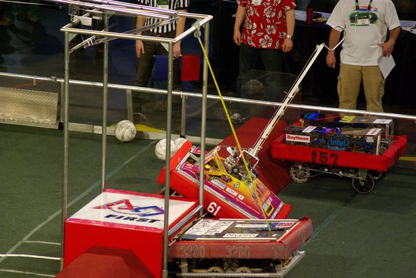
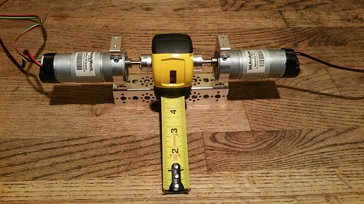

We have recently been working on a new approach to climbing the mountain. Our strategy so far was to have one system customized for climbing the mid and upper mountain (Churro Climber), and a separate system for climbing the cliff (Crossbow Grapple). The Churro climber system was beginning to work but it was floppy and we were thinking about stiffening the nylon extensions with measuring tape material. The Crossbow Grapple was working by hand, but we still hadn't mounted it to the robot and hadn't figured out how to rig it with a winch and servo trigger.
Then while researching grapples we stumbled on robots using tape measures as self-supporting winches. Brilliant! Many FRC robots have used this type of solution where it goes back at least as far as 2010:
And FTC teams are using the idea this season. We were inspired by how well team 6081 does this
This approach lets us simplify from two separate systems into one system that is much more compact. It also lets us switch to climbing the mountain in the opposite direction than we had been, which can extend the reach of our debris trough and maybe let us deposit in the highest debris container. It also seems like this approach could be more durable than what we what we've been working on.
Our design is composed of a tape measure and motors to pull or release with a hook at the end to grab the churros and upper bar. Team 6081 posted about their design, but we wanted a lighter version so we tried direct drive and Max designed a new 3D printed spool without a retracting spring in it. We bored large holes through the sides to allow motor hubs to stick out. We had to saw off a corner of the original case because it was limiting its own rotation to the elevation angles we needed. Then we drilled more holes in the case to attach the servo linkage that controls the elevation angle. Max designed a custom hook to go on the end and printed it.
In our first test, the tape measure broke (because we over-retracted it). It also has a problem where the tape extends out through the hole we made in the case when the tape is physically prevented from pushing outward. But if you avoid these situations, the tape measure seems very successful and was able to pull the robot all the way up the mountain. We plan to use this in our competition this week (yay!!).
This system is very important and will help deliver many points in the near future. In contrast to our previous pair of climbing systems, this is very practical and will be easier to use for the driver and it will work most if not 100% of the time. I hope this will be just as helpful to everyone else too.